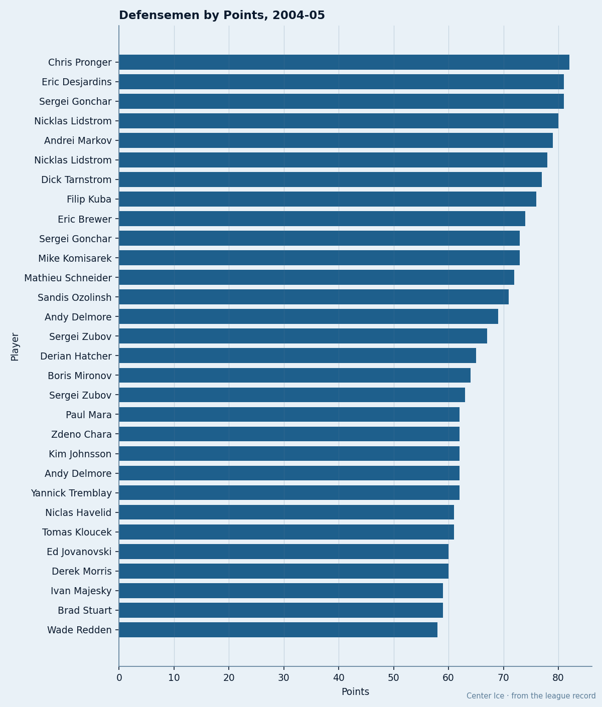
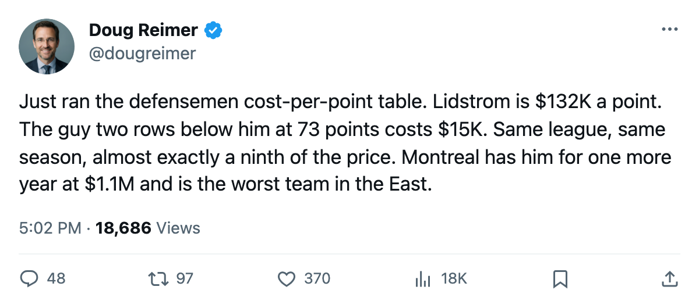
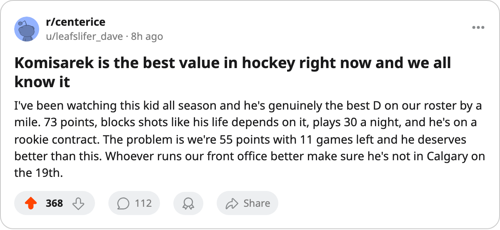

$15,068 a Point: The Cheapest 70-Point Defenseman in Hockey Has 1 Year Left and Plays for the Worst Club
Mike Komisarek leads all defensemen under 80 overall in scoring, costs less per point than any teammate, and has five days before what the calendar has as the trade deadline.
 Doug ReimerAnalytics editor, ex-video coach · The Slot Report
Doug ReimerAnalytics editor, ex-video coach · The Slot Report
Mike Komisarek82 has 73 points in 71 games at  Montreal Canadiens. His salary is $1.10M. His cost per point is $15,068. The team around him has produced 55 points in the same span, the lowest total in the league.
Montreal Canadiens. His salary is $1.10M. His cost per point is $15,068. The team around him has produced 55 points in the same span, the lowest total in the league.
The production is real
Komisarek sits 9th among defensemen in points this season. He carries 29.9 minutes a night. The Bureau's Development Index has him at +6, his form reading 74 against a base grade of 77, and the Book gives him 90 potential. His shot-blocking grade of 84 and his 81 speed are the attributes that let him log those minutes without a liability penalty.
No defenseman in the league's top 11 by points plays for a club further down the standings.  Nicklas Lidstrom84, first at 78 points, plays for a club with 81.
Nicklas Lidstrom84, first at 78 points, plays for a club with 81.  Sergei Gonchar90 at 73 sits 4th in the East. Komisarek plays for a club that has been outscored 56 to 79 in divisional play.
Sergei Gonchar90 at 73 sits 4th in the East. Komisarek plays for a club that has been outscored 56 to 79 in divisional play.

The cost spread is enormous
The table below ranks the 10 highest-scoring defensemen by the Bureau's current cost-per-point. The gap between Lidstrom at $132,051 and Dick Tarnstrom66 at $7,547 spans an order of magnitude. Komisarek sits third-cheapest.
| Player | Team | Overall | GP | Points | Salary | $/Point |
|---|---|---|---|---|---|---|
| Nicklas Lidstrom | DET | 90 | 70 | 78 | $10.30M | $132,051 |
| Sergei Gonchar | WSH | 84 | 65 | 73 | $3.30M | $45,205 |
| Mike Komisarek | MTL | 74 | 71 | 73 | $1.10M | $15,068 |
| Sandis Ozolinsh | CAR | 80 | 71 | 71 | $5.10M | $71,831 |
| Sergei Zubov | DAL | 85 | 71 | 67 | $5.00M | $74,627 |
| Andy Delmore | MIN | 75 | 69 | 62 | $1.00M | $16,129 |
| Zdeno Chara | OTT | 78 | 69 | 62 | $1.70M | $27,419 |
 Andrei Markov81 Andrei Markov81 | MTL | 73 | 61 | 55 | $0.70M | $12,727 |
| Dick Tarnstrom | PIT | 78 | 71 | 53 | $0.40M | $7,547 |
| Derek Morris | COL | 83 | 69 | 60 | $1.70M | $28,333 |
Tarnstrom and Markov are cheaper per point because their salaries are lower, not because they score more. Tarnstrom is on $0.40M. Markov is on $0.70M. Both are restricted free agents who signed late or cheap. Komisarek at $1.10M on a 7th-overall pick's rookie deal is the same structural bargain: the league's entry-level contracts do not track production, and a 23-year-old with 73 points on $1.10M is what that gap looks like.
The team context is the problem
MTL sits 15th in the East at 55 points in 71 games, a pace of 64 points over 82. The club has been outscored 56 to 79 in divisional play.  Jose Theodore91, their starter, is graded 83 in the Book. Their best forward,
Jose Theodore91, their starter, is graded 83 in the Book. Their best forward,  Richard Zednik85, is a 77. The roster around Komisarek is thin enough that his 61 assists represent a meaningful share of whatever offensive structure the club has.
Richard Zednik85, is a 77. The roster around Komisarek is thin enough that his 61 assists represent a meaningful share of whatever offensive structure the club has.
The club needs to keep him because no one else on the roster can generate what he does. It also needs the draft pick or prospects his $1.10M cost would fetch on the open market, because $1.10M for a 73-point defenseman is an asset that has no business sitting on a 55-point team when a contender would pay a first-round pick and a top-4 prospect to get 25 more minutes of his shot blocking.
The contract clock
Komisarek has 1 year left. He turns 24 in January. The Book's base grade of 77, his +6 on the Index, and a potential of 90 say the Bureau expects him to keep improving. A re-signing at any number between $3M and $5M would still make him a bargain on a per-point basis. A trade before what the calendar has as the deadline, 5 days from now, would bring the club the two things it lacks: scoring depth and a younger body on a team averaging 63 goals for in 18 divisional games.
Once the window closes, MTL either re-signs him above his current number or loses him for nothing in a year. The $15,068 per point does not survive his next contract, and the 55-point context makes it hard to justify giving it up.
Morale on the club reads 87.5, 5th-lowest in the league. The room sees it: Komisarek is the best player on the roster, he costs nothing, and the team is not going anywhere.

